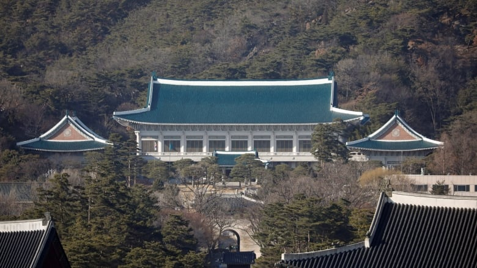

This image is from Lowy Institute
South Korea is a country located in the eastern region of Asia. The country is located on the Korean peninsula, bordering North Korea to the north. On the border, there is a demilitarized zone with military personnel from both North and South Korea guarding, which prevents people from crossing. This is commonly known as the 38th parallel.
Some major landforms include the Taebaek Mountains to the northeast, the Han River, which runs through the capital, and the Nakdong River, which is the longest river. The winters are often very cold and dry, while the summers are hot and humid. Korea is a mostly homogenous country with a foreign population of only 2.3%. Notable religions include Buddhism and Christianity. However, most Koreans hold atheist beliefs. The country is currently capitalistic and holds one of the largest economies in the world. The national currency is the won, which is worth about 0.1 cents. Korea is also run under a democracy with two prominent parties.
Seoul is the capital city of South Korea and is located in the north. The city was officially declared the capital in 1394 during the Joseon dynasty. The city is divided in half by the Han River, thus there are 31 bridges which cross the river. The population of Seoul is 9,765,869.
Seoul is home to various famous neighborhoods such as Gangnam, Itaewon, and Hongdae. Various famous attractions that showcase Korea's history are also located in Seoul such as the Gyeonbokgung Palace. Seoul is also home to Seoul National University, which is universally regarded as the #1 university in South Korea. The city is rectangular shaped and has four main gates in the four cardinal directions, which are also popular tourist destinations.
Seoul's mayor is currently Oh Se-Hoon who is a member of the Korean People Power Party. Oh won in a landslide after the previous mayor, Park Won-soon was exposed to be sexual harrassing his coworkers. The Seoul housing crisis is regarded as one of the major political issues currently plaguing South Korea. The Blue House is also located in Seoul, which houses the current president Moon Jae-In.
This image is from CBC
Gyeongbokgung Palace was originally built in 1395 during the Joseon Dynasty. The palace housed the royal family in early South Korea. The palace is also regarded to be the place where the Korean language was created. The palace was burned down by Japanese invaders in 1592 and was rebuilt later in 1867. It is the largest of Seoul's 5 Grand Palaces.
Today, Gyeongbokgung Palace is located in the center of Seoul and faces south. It is one of the largest tourist destinations in South Korea. It features a variety of wildlife and ponds. The changing of the guard ceremony also takes places at the palace daily.
This image is from Food In Love
I am interested in this country because I am born to South Korean parents. I would like to learn more about my cultural heritage as I have only seldom visited South Korea. Additionally, I am very interested in Korean music and entertainment, making me want to learn more about the culture.


© Ian Youn 2022